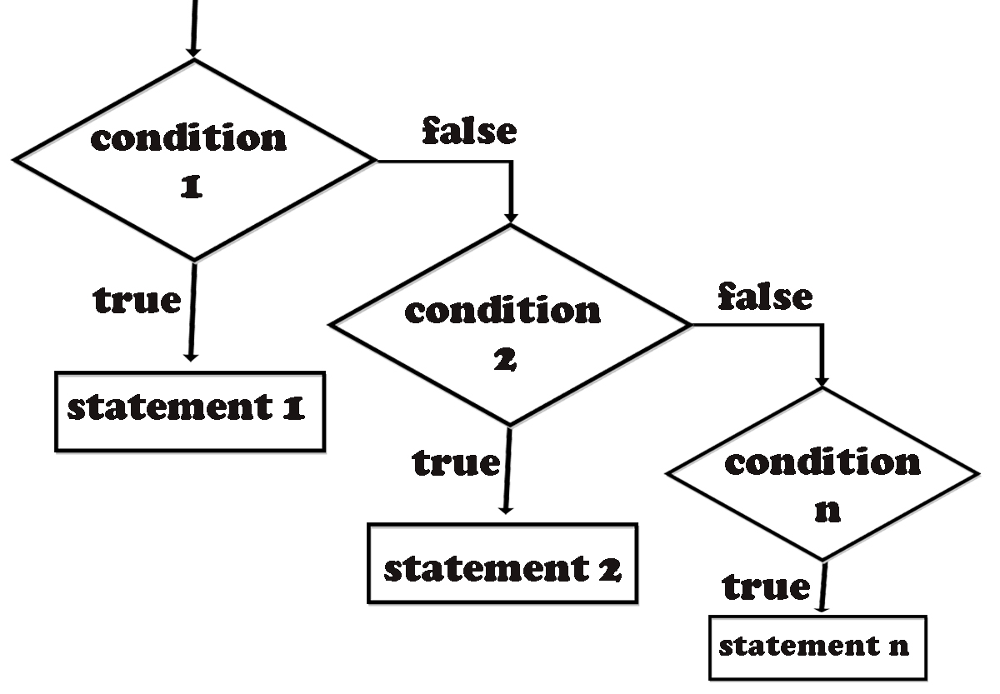
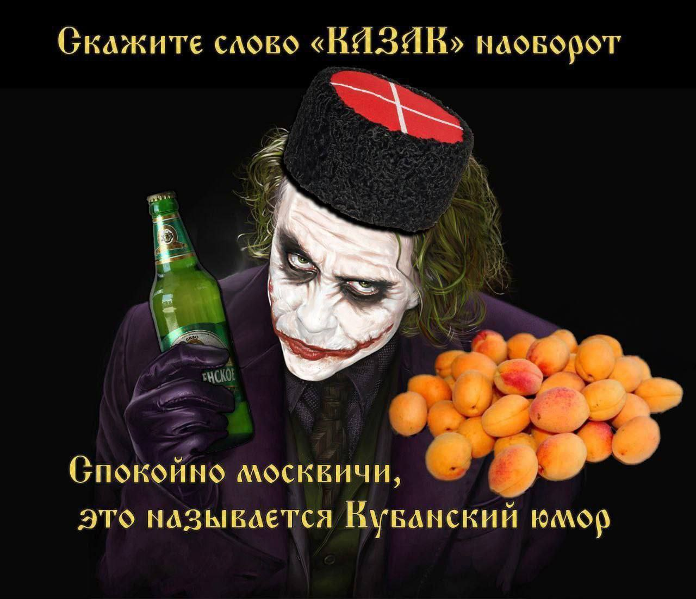

Урок 6. Циклы и условия
Повторение материаала
Циклы
Для чего существует цикл while? До каких пор он будет работать?
Что выведет код ниже
Для чего существует цикл for?
Как итерировать в цикле for по числам от 10 до 100?
Как итерировать в цикле for по всем знакам строки?
Можно ли цикл for всегда заменить циклом while?
Что такое вложенный цикл?
Что выведет код ниже? Сколько раз выполнится 3-я строка?
for outer in range(10):
for inner in range(10):
print(f'внешний цикл: {outer}, внутренний: {inner}')
Для чего вам может понадобиться вложенный цикл?
При помощи какого слова можно остановить цикл? Для чего это может понадобиться?
При помощи какого слова можно пропустить шаг цикла? Для чего это может понадобиться?
Зачем else циклу?
Что выведет этот код
word = 'helloWorld1111'
for letter in word:
if not letter.isalpha():
print('I am in break')
break
else:
print('I am in else')
Условия
К какому типу данных относятся True/False?
Какие операторы сравнения вы знаете?
Операторы "и", "или", "не"
Что выведется в результате?
Оператор if/else/elif
Что выведет этот код?
age = int(input())
if age < 0:
print('Введен неверный возраст')
if age < 18:
print('До 18 пиво не продаем')
print(f'Вот ваше пиво')
age = int(input())
if age < 0:
print('Введен неверный возраст')
if age > 0 and age < 18:
print('До 18 пиво не продаем')
if age > 18:
print(f'Вот ваше пиво')
age = int(input())
if age < 0:
print('Введен неверный возраст')
elif age < 18:
print('До 18 пиво не продаем')
else:
print(f'Вот ваше пиво')

if работает не только с типом bool:
Что выведет этот код?
if 'a':
print("'a' считается true в python")
else:
print("'a' считается false в python")
if '':
print("'' считается true в python")
else:
print("'' считается false в python")
if 0:
print("0 считается true в python")
else:
print("0 считается false в python")
if 1:
print("1 считается true в python")
else:
print("1 считается false в python")
if 100:
print("100 считается true в python")
else:
print("100 считается false в python")
Домашнее задание
Чтение
Прочитать статью про циклы. Особое внимание уделить теме:
- операторы управления циклами break, continue, pass;
- else для циклов;
- вложенные циклы.
Как работать со статьей:
- Упражнения, которые встречаются по тексту прочитывайте. Если вы понимаете, что можете их легко решить, пропускаете. Если с ходу не понятно, как решить, то пытаетесь решить. Если в течение 30 минут не смогли решить сами, смотрите решения.
- Упражнения
Задания для закрепления работы с цикламиделать не обязательно, но если сделаете, вам только плюс.
Упражнения
Задачи могут быть достаточно сложными. Если что-то не получится, не страшно. Для каждой задачи ставьте таймер 40 минут. Если за 40 минут не смогли, переходите к следующей. В ходе решения пользуйтесь всем кроме ChatGPT, DeepSeek и прочих языковых моделей.
Квадратные корни
Напишите программу, которая получает через input целое число.
- Если ввели число, которое после взятия квадратного корня остается целым, то она выводит:
Правильное числои завершает выполнение. - Иначе она выводит
Неправильное числои просит ввести число снова.
Совет: для взятия квадратного корня можете использовать функцию sqrt из модуля math
Проверка сложности пароля
Напиши функцию для проверки сложности пароля. Функция должна принимать 1 аргумент - пароль в формате строки. Возвращает True, если пароль соответствует всем критериям безопасности:
- Длина больше или равна 8 символов
- Содержит хотя бы одну цифру
- Содержит хотя бы одну маленькую букву
- Содержит хотя бы одну большую букву
False если хотя бы одна проверка не пройдена
Палиндромы
Напишите функцию, которая в качестве аргумента принимает строку и возвращает True, если строка является палиндромом, иначе False. Строка называется палиндромом, если ее можно прочитать в обратном порядке так же, как и в обычном. Примеры:
- deed
- peep
- rotator
- kazak

Поиск в строке
Напишите функцию find_in_str, не используя метод строки fшnd. Функция должна принимать 2 аргумента:
- Строка, в которой необходимо найти подстроку
- Сама подстрока
Функция должна возвращать индекс начала первого вхождения подстроки в строку. Если подстроки нет в строке, то -1. Другими словами, она должна работать как метод find
Советы:
- Задачу можно решить только используя цикл for или while, но for лучше
- В цикле вам надо будет перебирать индексы первого вхождения подстроки в строку
- Для поиска вам придется сравнивать подстроку со срезом основной строки